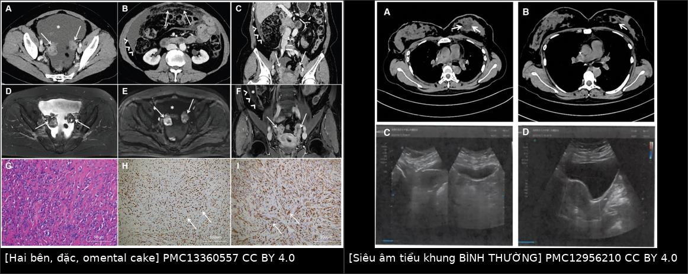
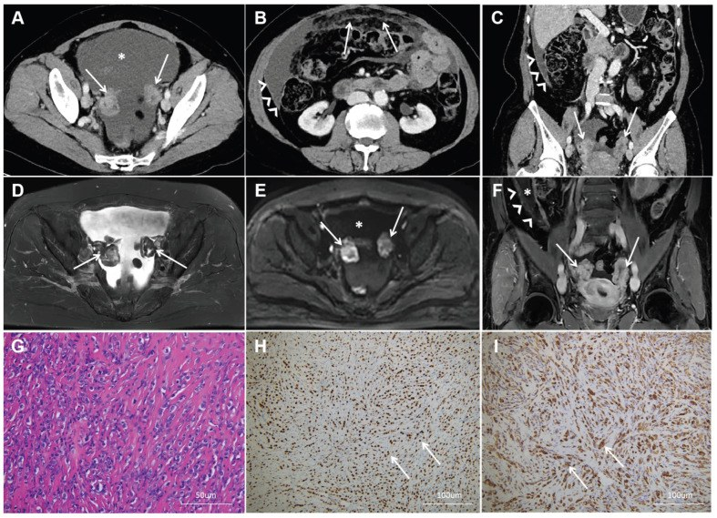
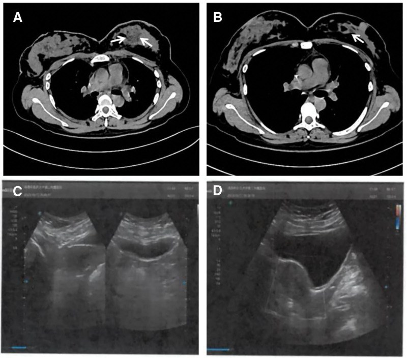
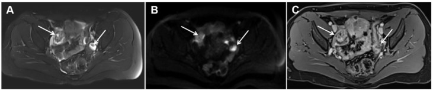

1649 — Di căn buồng trứng & phần phụ của ung thư vú / Breast-cancer ovarian and adnexal metastasis
Tags: pattern:khoi-phan-phu pattern:khoi-dac-hai-ben pattern:di-can pattern:day-phuc-mac pattern:dich-o-bung vung:buong-trung vung:tieu-khung vung:phuc-mac protocol:sieu-am-dau-do protocol:CT-bung-chau protocol:MRI-tieu-khung-DWI protocol:PET-FDG score:RECIST-1.1 score:O-RADS incidentaloma:khoi-phan-phu
Mức chắc chắn (certainty): tổng hợp y văn (literature synthesis) — số liệu đọc trực tiếp từ toàn văn: đoàn hệ 41 ca có mô bệnh (Front Oncol 2025, PMC12500702), loạt 6 ca thể tiểu thùy có ảnh CT/MRI (Diagnostics 2026, PMC13360557), nghiên cứu độ chính xác CT toàn thân 60 ca (Diagnostics 2022, PMC8870859), ca di căn ẨN có ảnh (Medicine 2026, PMC12956210), đặc điểm MRI di căn buồng trứng (Jpn J Radiol 2025, PMC11953186); có ca nguyên văn cho quiz.
1. Tổng quan bệnh học – cơ chế hình ảnh
- Tần suất và thứ hạng nguyên nhân: u di căn chiếm 5,2–10% toàn bộ u buồng trứng; trong số đó 57% từ đường tiêu hóa và 30% từ ung thư vú — nghĩa là vú chỉ đứng sau ống tiêu hóa, và là nguồn phổ biến nhất ở nữ có tiền sử ung thư vú. Ở nhóm đã di căn xa, di căn buồng trứng được báo cáo 13–47% (dao động lớn vì khác nhau về cách phát hiện: tử thiết/cắt phần phụ dự phòng so với chỉ chụp khi có triệu chứng).
- Vì sao ung thư vú "thích" buồng trứng: buồng trứng có mạng mạch và bạch mạch phong phú + môi trường nội tiết tại chỗ (buồng trứng là nguồn estrogen chính ở nữ tiền mãn kinh) tạo "đất" cho tế bào ERα dương bám và phát triển. Đây là lý do 87,8% (36/41) ca di căn buồng trứng trong đoàn hệ 41 ca là ER và/hoặc PR dương, 85,4% thuộc Luminal B (không phải ngẫu nhiên mà là chọn lọc cơ chế).
- Thể mô học quyết định đường lan: thể tiểu thùy (ILC) mất E-cadherin → tế bào lan một hàng (single-file) theo mô đệm và mặt thanh mạc → hay vào phúc mạc, ống tiêu hóa, buồng trứng: ~19% ca ILC đã di căn xa có tổn thương ở buồng trứng/tử cung, nguy cơ gấp ~3 lần so với ống tuyến; nhưng thể ống tuyến (IDC) vẫn là đa số vì IDC phổ biến hơn nhiều (80,5% vs 19,5% trong 41 ca) — không được loại trừ di căn chỉ vì bệnh nguyên là IDC.
- TẠI SAO hình ảnh lại khó (vật lý + mô bệnh):
- Siêu âm: khối di căn là mô đặc, giàu tế bào, ít mô đệm myxoid → giảm âm, bờ không đều, có mạch máu trong khối; khác nang cơ năng (trống âm, thành mỏng). Nhưng kích thước buồng trứng có thể BÌNH THƯỜNG ở gần một nửa số ca vì tế bào u lấp vào mô buồng trứng (nested in medulla/cortex) chứ không tạo khối phình to → siêu âm âm tính không loại trừ.
- CT: di căn vú thường giảm tỷ trọng, ít mạch (hypovascular) hơn nhu mô buồng trứng → dễ đồng tỷ trọng với cơ/tử cung và bị bỏ qua; ngược lại u buồng trứng nguyên phát hay hỗn hợp đặc–nang (dịch + vách) vì xuất phát từ biểu mô bề mặt và tạo nhú trong nang.
- MRI/DWI: khối đặc giàu tế bào → hạn chế khuếch tán: DWI sáng, ADC thấp; mô xơ của Krukenberg (dạ dày–đại tràng) tạo vòng xơ T2 tối dày > 5 mm ("black scrunchie").
- Tiên lượng (định lượng): trong 41 ca, trung vị sống toàn bộ 85,0 tháng (KTC 95% 67,4–102,7) nhưng sau khi cắt hai phần phụ chỉ còn 28 tháng (KTC 16–36); thể tiểu thùy sau di căn buồng trứng 11,5 tháng vs thể ống tuyến 30,0 tháng (p = 0,01) — cùng một "di căn buồng trứng" nhưng tiên lượng khác nhau gấp ~2,6 lần theo mô học.
- Vì sao "phát hiện lúc cắt dự phòng" lại tốt hơn: 46,3% (19/41) ca chỉ được chẩn đoán khi cắt phần phụ dự phòng (không triệu chứng, không bất thường hình ảnh); sống sau di căn 30 tháng so với 16 tháng ở nhóm phát hiện bằng triệu chứng/hình ảnh — phát hiện sớm đổi được tiên lượng, đây là lý do hình ảnh phải chủ động tìm chứ không chờ bệnh nhân đau.
2. Mẫu hình + chẩn đoán phân biệt theo vị trí (Gamut)
- Khuôn 1 — Nữ có tiền sử ung thư vú, khối phần phụ ĐẶC hai bên ± dịch ổ bụng. Gamut: di căn vú vs ung thư buồng trứng nguyên phát (HGSOC) vs Krukenberg (dạ dày/đại tràng) vs u tế bào hạt–mô đệm (granulosa/fibrothecoma) vs lymphoma vs lao phúc mạc. Chốt: mô học + IHC, không phải hình thái.
- Khuôn 2 — Khối đặc MỘT bên, kích thước lớn, hỗn hợp đặc–nang, có nhú trong nang. Gamut nghiêng nguyên phát (đặc biệt HGSOC: vách nhú, dịch ổ bụng, CA-125 rất cao) — nhưng hai bên chỉ đạt AUC 0,59 trong phân biệt, nên không dùng "một bên" để loại di căn.
- Khuôn 3 — Khối phần phụ + bánh mỡ phúc mạc (omental cake) + dịch ổ bụng nhiều. Gamut: di căn phúc mạc của ILC vs carcinomatosis phúc mạc nguyên phát vs pseudomyxoma peritonei vs lao phúc mạc. Chốt: tế bào học dịch + sinh thiết mô bụng (đường ngắn nhất, tránh mổ).
- Khuôn 4 — Buồng trứng "bình thường" trên siêu âm/CT ở người có HR+ đang dùng tamoxifen. Gamut: di căn ẩn vs nang chức năng do tamoxifen vs u giáp biên vs bình thường. Chốt: MRI có DWI + theo dõi bằng cùng một phương thức; ca ẩn dưới đây có siêu âm tiểu khung hoàn toàn bình thường.
- Khuôn 5 — Nữ mang BRCA1/2, khối phần phụ mới. Gamut: ung thư buồng trứng nguyên phát (nguy cơ nền rất cao) vs di căn vú. Chốt: sinh thiết/PHẫu thuật có kế hoạch, không mặc định là di căn (bản thân BRCA làm tăng u nguyên phát; tỉ lệ di căn buồng trứng không khác giữa người mang và không mang đột biến).
- Gợi nhớ "OVARY": One side hay bilateral (không tin một mình) · Vú là bệnh nguyên phổ biến thứ 2 · Ascites + omental cake → nghĩ phúc mạc · Receptor (ER/PR dương) · Yield of biopsy > surgery.
3. Bảng so sánh phân biệt (ma trận đối chiếu)
| Thực thể (entity) | Hình ảnh điển hình (SA / CT / MRI) | Chốt vào (rule-in) | Chốt loại (rule-out) | Gợi ý xác nhận |
|---|---|---|---|---|
| Di căn ung thư vú | Khối ĐẶC (hoặc đặc–nang), hai bên 63,4–100%, kích thước có thể bình thường, ± dịch ổ bụng, ± omental cake; T2 trung bình, DWI sáng/ADC thấp, ngấm mạnh | Tiền sử ung thư vú + khối đặc + đa ổ/hai bên + ER/PR dương + GATA-3 dương, PAX8 âm | Hình thái thuần nang, không có bất kỳ thành phần đặc → gần như loại di căn | Sinh thiết/laparoscopy; IHC GATA-3, ER, E-cadherin, PAX8 |
| Ung thư buồng trứng nguyên phát (HGSOC) | Hỗn hợp đặc–nang, nhú trong nang, vách dày, hai bên nhưng hay rất lớn, dịch ổ bụng, carcinomatosis | Nhú + thành phần nang + CA-125 rất cao + PAX8/WT1 dương | Khối đặc thuần, nhỏ, hai bên đối xứng ở người có tiền sử vú → nghi di căn | PAX8, WT1, p53; CA-125; mổ theo lý thuyết u nguyên phát |
| Krukenberg (dạ dày/đại tràng) | Hai bên, đặc, vòng xơ T2 tối dày > 5 mm, > 180° ("black scrunchie"), không hạn chế khuếch tán ở vòng xơ; tế bào nhẫn | CDX2/SATB2 dương, CK20 dương, GATA-3 âm + u nguyên phát ống tiêu hóa | GATA-3 dương, CK7 dương/CK20 âm → không phải Krukenberg | Nội soi tiêu hóa + IHC + sinh thiết |
| U tế bào hạt / u xơ–tế bào (sex cord–stromal) | Khối đặc, T2 tối mạnh (fibroma), ngấm thuốc ít; granulosa có "swiss cheese" | T2 rất tối + không hạn chế khuếch tán + Inhibin dương | DWI sáng/ADC thấp lan tỏa → nghi ác/di căn | Inhibin, calretinin; MRI |
| Lymphoma buồng trứng | Khối đặc đồng nhất, rất ít ngấm, có thể hai bên, kèm hạch | Hạch ổ bụng lớn + LDH cao + tế bào lympho bất thường | Không có hạch, LDH bình thường | Sinh thiết + hóa mô miễn dịch |
| Lao phúc mạc – phần phụ | Dày phúc mạc đều, dịch ổ bụng có vách mỏng, buồng trứng có thể bình thường | Dịch tiết dịch tiết (exudate) + ADA cao + hình ảnh phổi lao | Bánh mỡ phúc mạc dày đặc + nốt đặc → nghi carcinomatosis | PCR lao trong dịch; sinh thiết phúc mạc |
| Nang chức năng / u giáp biên | Thuần nang, thành mỏng, không thành phần đặc; giáp biên có nhú nhỏ | Thuần nang, không mạch, tự thoái triển sau 2–3 chu kỳ | Có thành phần đặc ngấm thuốc → không phải nang chức năng | Siêu âm lặp sau 6–8 tuần |

Trái: CT có cản quang — hai khối phần phụ đặc, ngấm thuốc (mũi tên) + bánh mỡ phúc mạc (omental cake) và nốt phúc mạc; phía dưới là MRI T2/DWI/CE và mô bệnh của cùng ca. Phải: ca di căn ẩn — CT ngực thấy tổn thương vú (A, B trước/sau hóa trị), còn siêu âm tiểu khung (C, D) hoàn toàn bình thường vì tế bào u lấp trong mô buồng trứng mà không làm buồng trứng to lên. Nguồn: Li A và cs., Diagnostics 2026, Fig. 1 (CC BY 4.0); Li P và cs., Medicine 2026, Fig. 1 (CC BY 4.0).Vì sao "khối đặc" mạnh hơn "hai bên" (đọc đúng nghiên cứu độ chính xác)
- Trên CT toàn thân ở 60 bệnh nhân có bằng chứng mô bệnh buồng trứng: phân biệt lành/ác đạt Se 100% / Sp 98,0% / AUC 0,99; nhưng phân biệt di căn vú vs u buồng trứng nguyên phát chỉ đạt Se 100% / Sp 85,7% / AUC 0,93.
- Đặc điểm "đặc" (solid) cho AUC 0,99, trong khi "hai bên" chỉ 0,59 (p < 0,0001) — tức tính hai bên gần như không thêm thông tin trong đoàn hệ này, dù y văn vẫn mô tả di căn vú "thường hai bên". Bài học: dùng hình thái (đặc/ngấm thuốc) làm trục chính, không dùng laterality làm chốt.
- Kích thước không phân biệt: u nguyên phát 8,4 cm (4,9–25,2) vs di căn 8,6 cm (4,7–13,7), p = 1,000.
- Khoảng cách chẩn đoán ngắn hơn ở nhóm di căn: 8 tháng vs 29 tháng (p = 0,044) — di căn xuất hiện "sớm" sau chẩn đoán vú, còn u nguyên phát mới là bệnh "muộn" thứ hai.
4. Protocol chụp + thuật toán xác nhận
Bước 1 — Siêu âm đầu dò âm đạo (transvaginal US) là cửa vào, nhưng phải mô tả 4 thứ:
- Thành phần: thuần nang / đặc–nang / đặc (yếu tố mạnh nhất hướng di căn).
- Tính chất mô đệm: vòng giảm âm dày quanh khối (gợi xơ của Krukenberg) vs nhú trong nang (gợi nguyên phát).
- Mạch máu trong khối (Doppler màu): mạch trung tâm/tăng sinh → nghi ác.
- Dịch ổ bụng + bánh mỡ phúc mạc: nếu có, chuyển thẳng sang sinh thiết/paracentesis thay vì mổ chẩn đoán.
Bước 2 — CT bụng–chậu có cản quang (thì tĩnh mạch cửa 60–70 giây, lát 1,25 mm):
- Ghi 4 con số: kích thước khối lớn nhất (mm) · số khối mỗi bên · có/không omental cake · có/không dịch ổ bụng.
- Tìm ổ di căn đồng thời: gan, xương, phổi, hạch sau phúc mạc — vì di căn buồng trứng gần như luôn là bệnh hệ thống, không phải bệnh khu trú.
Bước 3 — MRI tiểu khung có DWI/ADC + T1 sau tiêm (khi CT/SA chưa chốt):
- Chuỗi tối thiểu: T2 FS axial–sagittal, DWI b = 0 và 800–1.000 s/mm², ADC, T1 FS sau tiêm thì động mạch–tĩnh mạch cửa.
- Đo ADC vùng đặc (ROI đặt trong phần đặc, tránh vùng hoại tử): ADC thấp + DWI sáng hỗ trợ mô đặc giàu tế bào; ADC cao (T2 shine-through) hướng u máu/xơ lành.
- Dấu hiệu mạch nuôi dẫn (guiding vessel sign) — cấu trúc mạch dạng cây đi từ ngoại vi vào trung tâm khối — được mô tả là dấu hiệu gợi ý di căn hơn là u nguyên phát.
Bước 4 — Chẩn đoán mô học TRƯỚC khi mổ lớn (điểm quyết định của bài này):
- Trong loạt 6 ca ILC, 5/6 (83%) bị chẩn đoán nhầm là ung thư buồng trứng nguyên phát và đã cắt tử cung toàn bộ + hai phần phụ — một phẫu thuật không cải thiện sống ở bệnh đã di căn.
- Ca thứ 6 được sinh thiết qua da tổn thương màng bụng/da → xác định di căn ILC → không mổ phụ khoa, điều trị toàn thân; sau 4 chu kỳ, khối buồng trứng 4,5 → 3,8 cm và 3,9 → 2,7 cm, nốt phúc mạc thoái triển.
- Ưu tiên lấy mô ở nơi dễ nhất (nốt da, hạch, dịch ổ bụng, omental cake) → IHC: GATA-3, ER, PR, E-cadherin, CK7, CK20, PAX8, WT1. Trong 6 ca: GATA-3 dương 6/6, PAX8 âm 6/6, E-cadherin âm 6/6.
Bước 5 — Điều trị theo bản chất bệnh:
- Nếu HR dương: cắt hai phần phụ vừa là giảm khối vừa là triệt estrogen (ovarian ablation) — đây là lý do cắt phần phụ dự phòng có ý nghĩa điều trị, không chỉ chẩn đoán.
- Nếu bệnh đa ổ (gan/xương/phổi): điều trị toàn thân là chính; mổ phụ khoa chỉ khi có biến chứng hoặc để giảm khối có chọn lọc.
- PET/CT ¹⁸F-FDG: hữu ích khi CT mơ hồ; trong loạt 6 ca, 2 ca có tăng FDG với SUVmax 3,2–4,9 — nhưng buồng trứng sinh lý cũng bắt FDG, nên luôn đọc kèm hình thái trên CT.
flowchart TD
A[Khoi phan phu o nguoi co tien su ung thu vu] --> B[Sieu am dau do am dao]
B --> C{Co thanh phan DAC ngan thuoc?}
C -->|Khong: thuan nang| D[Theo doi 6-8 tuan: nang chuc nang]
C -->|Co| E[CT bung-chau co can quang + MRI co DWI/ADC]
E --> F{Co o di can phuc mac / dich o bung / ton thuong de lay mo?}
F -->|Co| G[Sinh thiet noi de nhat + IHC GATA-3, ER, PAX8, CDX2]
F -->|Khong| H[Sinh thiet/laparoscopy buong trung]
G --> I{GATA-3 duong, PAX8 am?}
H --> I
I -->|Co| J[Di can ung thu vu: dieu tri toan than + cat hai phan phu neu HR duong]
I -->|Khong| K[U nguyen phat / Krukenberg: phau thuat theo phac do rieng]
5. Biến thể bình thường và cạm bẫy
- Cạm bẫy số 1 — "siêu âm bình thường = không di căn": ca ẩn có siêu âm tiểu khung bình thường và CT bụng bình thường, chẩn đoán chỉ có sau mổ. Gần một nửa ca di căn vú có buồng trứng không to; tế bào u nằm trong tủy/vỏ buồng trứng mà không tạo khối. → Ở bệnh nhân HR+ tiền mãn kinh có chỉ định cắt phần phụ dự phòng, âm tính trên hình ảnh không phải lý do bỏ mổ.
- Cạm bẫy số 2 — dùng "hai bên" để chốt: AUC chỉ 0,59; nhiều u nguyên phát cũng hai bên, nhiều di căn lại một bên (36,6% một bên trong 41 ca).
- Cạm bẫy số 3 — tin CA-125: CA-125 tăng ở cả u nguyên phát và di căn, không phân biệt được; chỉ CEA và CA19-9 tăng mới chỉ gặp ở nhóm di căn vú trong nghiên cứu 60 ca. CA-125 bình thường không loại trừ, CA-125 cao không chứng minh nguyên phát.
- Cạm bẫy số 4 — mổ chẩn đoán: 5/6 ca bị cắt tử cung + hai phần phụ "oan" vì tưởng nguyên phát. Ở bệnh đã di căn, phẫu thuật này không kéo dài sống mà làm mất cơ hội điều trị toàn thân sớm.
- Cạm bẫy số 5 — bỏ theo dõi sau 5 năm: ILC có thể di căn buồng trứng muộn tới 13 năm sau chẩn đoán ban đầu; khoảng cách trong đoàn hệ 41 ca là 6–192 tháng, trung vị 38 tháng, với 41,5% ca xuất hiện sau 61 tháng.
- Cạm bẫy số 6 — nhầm u buồng trứng nguyên phát ở người mang BRCA: đột biến BRCA làm tăng u nguyên phát, không làm tăng di căn; không được suy luận "có BRCA nên chắc là nguyên phát" hay ngược lại.
- Biến thể bình thường dễ nhầm: nang chức năng do tamoxifen (thuần nang, nhiều nang nhỏ hai bên) — đặc điểm thuần nang, không thành phần đặc, tự thoái triển là chốt loại trừ; buồng trứng sinh lý bắt FDG trên PET.
6. Tự lượng giá — Blind Quiz
Ca 1 — Nữ 44 tuổi, ILC vú phải 13 năm trước, đau bụng âm ỉ; CT bụng–chậu có cản quang.

- Gợi ý lâm sàng: đã điều trị ung thư vú 13 năm, hiện đau bụng và chướng.
- Câu hỏi: mô tả tổn thương ở hai phần phụ và phúc mạc? Ba chẩn đoán phân biệt? Dấu hiệu nào trên ảnh không giúp phân biệt?
Bấm để hiện đáp án (findings + chẩn đoán)
- Dấu hiệu: (A) hai khối phần phụ đặc, ngấm thuốc, bờ không đều (mũi tên); (B–C) omental cake (mũi tên rỗng) + nốt phúc mạc dạng kê (miliary) + dịch ổ bụng lượng nhiều; (D–F) MRI T2/DWI/T1 sau tiêm xác nhận thành phần đặc; (G–I) mô bệnh: tế bào u xếp một hàng trong mô đệm xơ, ER dương, CK7 dương.
- Chẩn đoán: di căn buồng trứng + phúc mạc của ILC vú.
- Vì sao: tế bào ILC mất E-cadherin nên lan theo mặt thanh mạc → bánh mỡ phúc mạc là biểu hiện thường gặp (4/6 ca, 67% trong loạt này; 83% có dịch ổ bụng). "Hai bên" không phải chốt (AUC 0,59) — chốt là mô học + GATA-3 dương/PAX8 âm.
- Nguồn ảnh: Li A và cs., Diagnostics 2026, Fig. 1 (CC BY 4.0).
Ca 2 — Nữ 32 tuổi, ung thư vú trái HR+/HER2− đã hóa trị tân bổ trợ; siêu âm tiểu khung và CT bụng trước mổ đều bình thường, nhưng cắt hai phần phụ dự phòng lại có di căn.

- Câu hỏi: vì sao hình ảnh âm tính? Có nên bỏ cắt phần phụ dự phòng khi hình ảnh bình thường? IHC nào chứng minh nguồn gốc vú?
Bấm để hiện đáp án
- Dấu hiệu: (A) trước hóa trị — tổn thương giảm tỷ trọng hình tròn ở vú; (B) sau hóa trị — tổn thương giảm rõ, khó nhận ra; (C, D) siêu âm tử cung/phần phụ không thấy bất thường.
- Chẩn đoán: di căn ẩn của ung thư vú thể ống tuyến vào buồng trứng, chỉ phát hiện trên mô bệnh sau cắt hai phần phụ.
- Vì sao âm tính: tế bào u lấp trong tủy/vỏ buồng trứng không tạo khối → kích thước buồng trứng bình thường ở gần một nửa số ca; đây là lý do hình ảnh sạch không loại trừ ở bệnh nhân HR+ tiền mãn kinh.
- IHC chứng minh: mô buồng trứng GATA-3 dương, PAX8 âm, ER 3+/90%, E-cadherin dương (thể ống tuyến) — PAX8 âm là điểm tách khỏi u Müllerian nguyên phát.
- Vì sao vẫn cắt: ở HR+ tiền mãn kinh, cắt phần phụ vừa triệt nguồn estrogen vừa chẩn đoán giai đoạn; ca này sau đó dùng letrozole + abemaciclib, ổn định khi theo dõi.
- Nguồn ảnh: Li P và cs., Medicine 2026, Fig. 1 (CC BY 4.0).
Ca 3 — Nữ 40 tuổi, tiền sử ung thư vú 2 năm, không triệu chứng; MRI tiểu khung có DWI.

- Câu hỏi: tín hiệu trên T2, DWI và sau tiêm nói gì? Có cần mổ ngay không?
Bấm để hiện đáp án
- Dấu hiệu: (A) T2 FS — hai khối hỗn hợp đặc–nang, phần đặc T2 trung bình (không tối như xơ, không sáng như nang); (B) DWI b = 800 — phần đặc sáng = hạn chế khuếch tán; (C) T1 FS sau tiêm — phần đặc ngấm thuốc rõ.
- Chẩn đoán: di căn buồng trứng hai bên của ILC vú (thành phần nang do hoại tử/bọc dịch trong khối).
- Vì sao: mô đặc giàu tế bào → hạn chế khuếch tán (DWI sáng, ADC thấp) và ngấm thuốc; khác u xơ–tế bào (T2 rất tối, ngấm ít) và nang chức năng (không có phần đặc).
- Có cần mổ ngay không: không — cần mô học trước (sinh thiết/laparoscopy); nếu xác nhận di căn vú thì điều trị toàn thân là chính, mổ phụ khoa chỉ khi HR dương/giảm khối có chọn lọc.
- Nguồn ảnh: Li A và cs., Diagnostics 2026, Fig. 2 (CC BY 4.0).
Bài liên quan chéo
- 500 – Tổng quan Hệ Vú & Sản Phụ khoa
- 522 – Theo dõi sau điều trị ung thư vú
- 535 – Ung thư buồng trứng – phúc mạc & Krukenberg
- 530 – Buồng trứng: O-RADS trên siêu âm & MRI
- 1618 – Di căn da & thành ngực của ung thư vú
- 1620 – Urinoma & khối tiểu khung lành tính
- 1648 – Di căn gan ở ung thư vú
Không dùng để chẩn đoán độc lập khi chưa có người hướng dẫn.